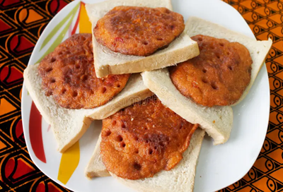
Akara and Bread
Fried bean cakes served with Agege bread.
₦800
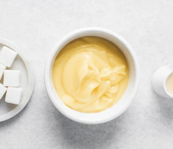
Akamu (Pap)
Fermented maize gruel, often enjoyed with milk and sugar.
₦600
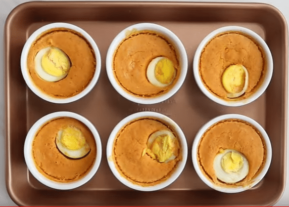
Moi Moi
Steamed bean pudding.
₦700
Oatmeal
Sometimes paired with plantain or fruits.
₦900
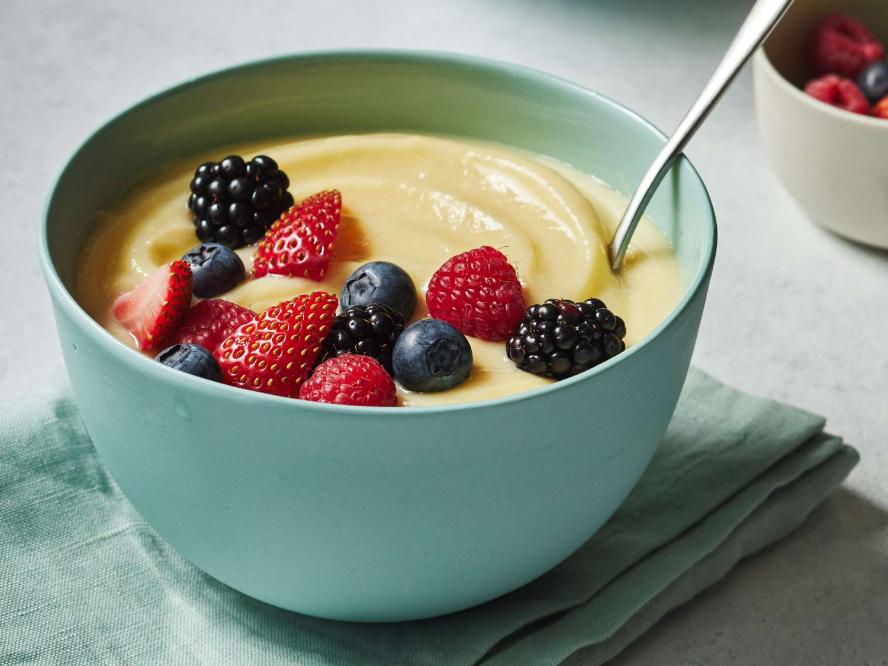
Custard
A light, porridge-like dish often served in the mornings.
₦650
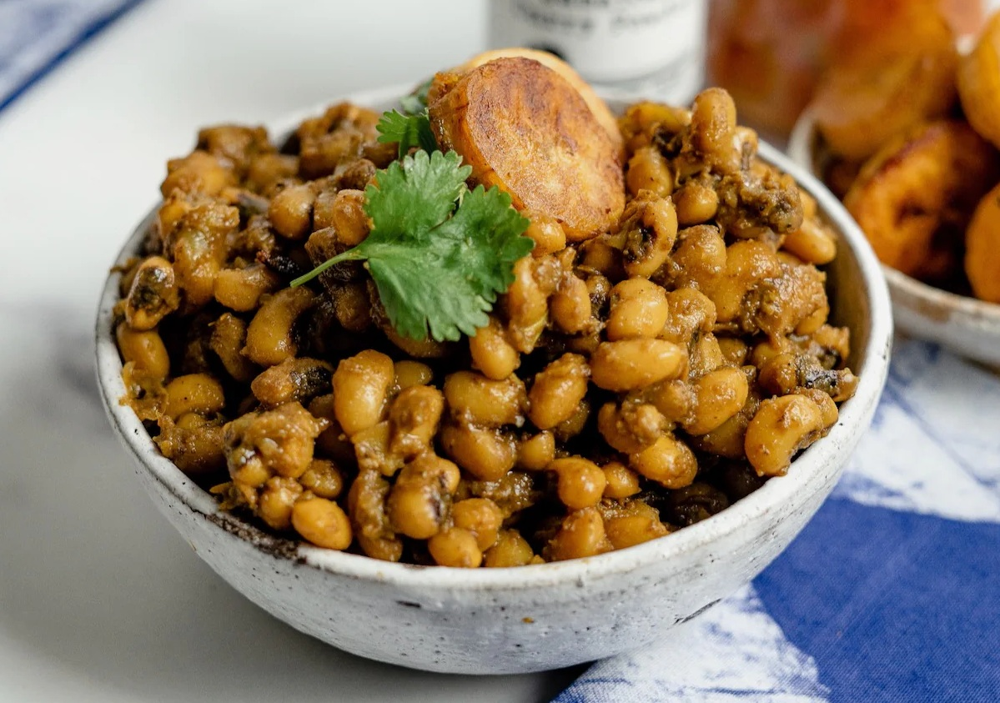
Beans (Ewa)
Cooked beans, sometimes with plantains or Ewa Agoyin stew.
₦1000
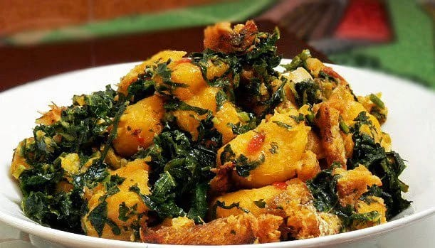
Yam Porridge (Asaro)
Savory yam porridge with vegetables and palm oil.
₦1200
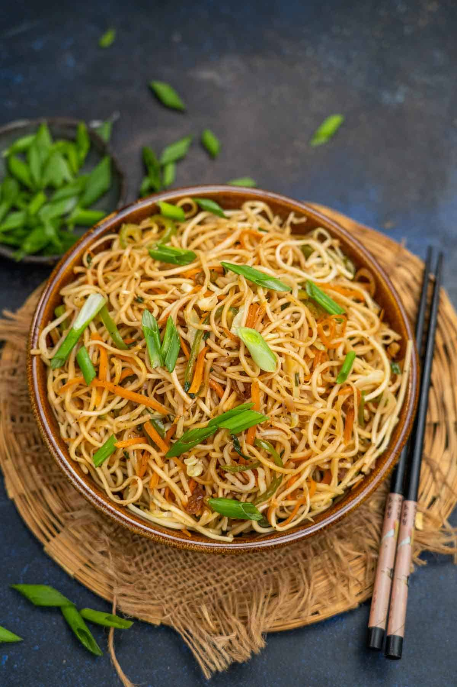
Noodles
Stir-fried with vegetables and egg.
₦800
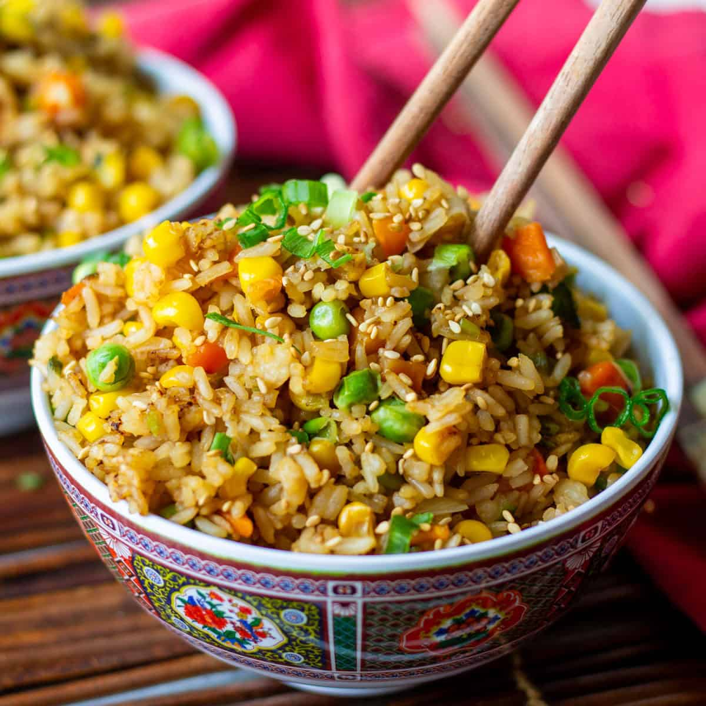
Rice
Served with fish stew, vegetables, or Jollof/Fried rice.
₦1500
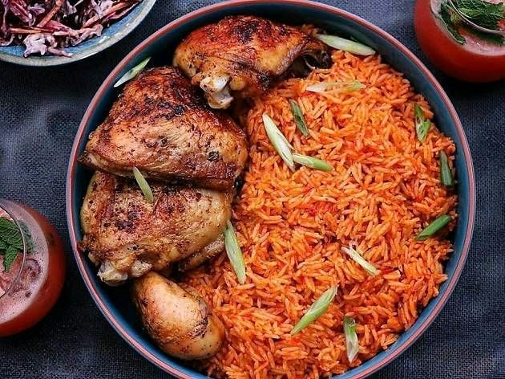
Jollof Rice
Iconic rice dish cooked in rich tomato-based broth.
₦2000
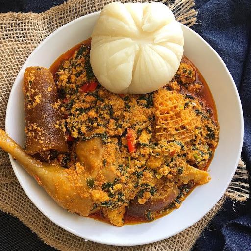
Pounded Yam & Egusi
Pounded yam served with ground melon seed soup.
₦2500
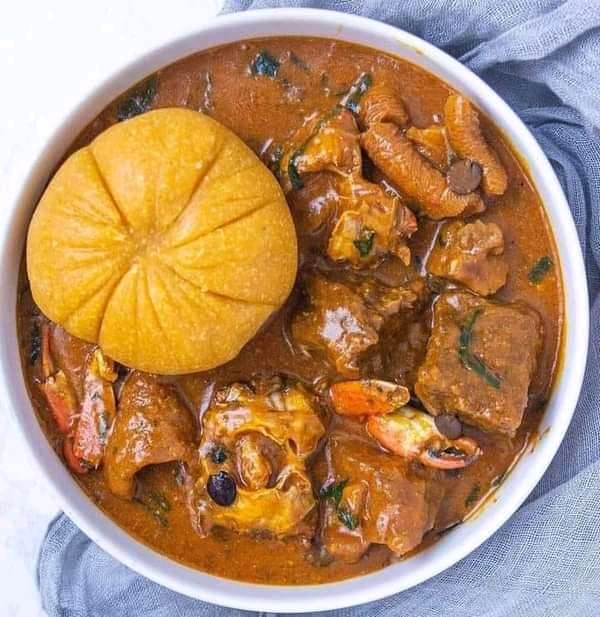
Eba & Ogbono Soup
Cassava swallow with slippery Ogbono soup.
₦2200
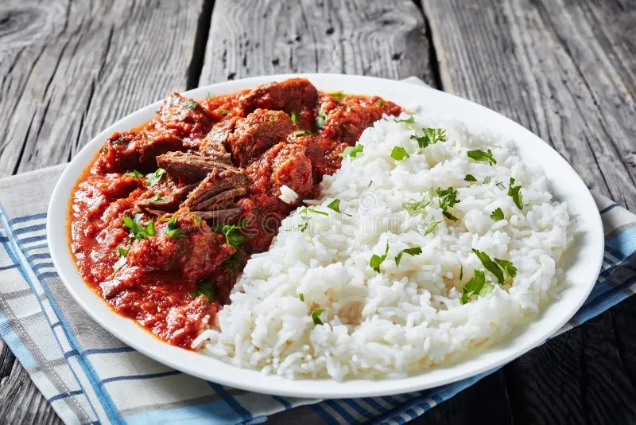
Rice and Stew
White rice with fish, chicken, or assorted meat stew.
₦1800
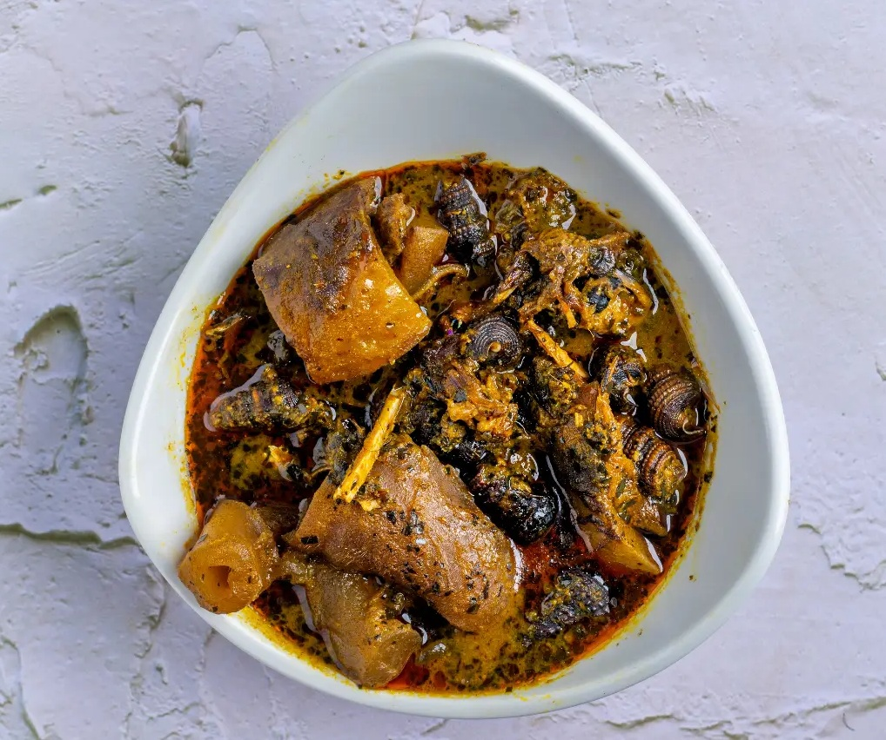
Banga Soup
Rich palm fruit soup served with starch.
₦2700